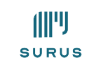
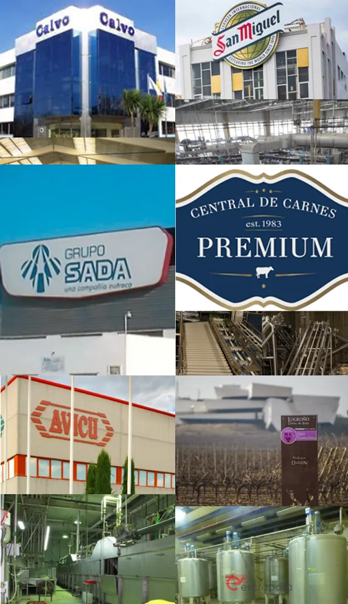
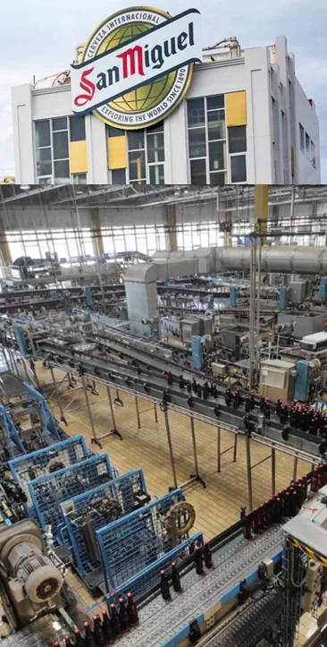
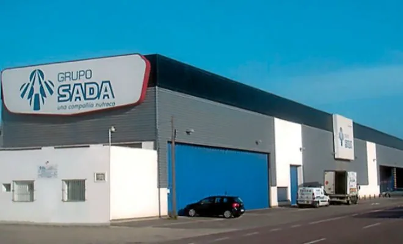
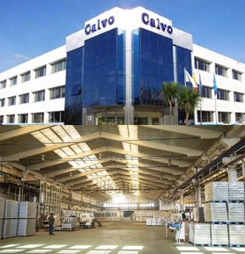
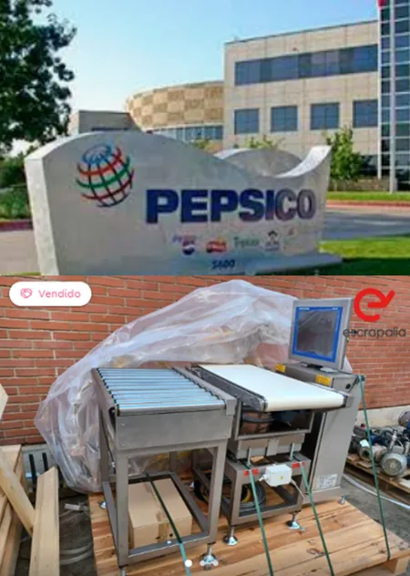
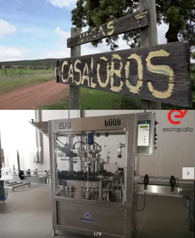
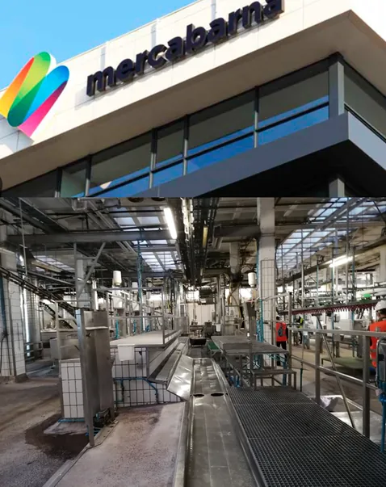
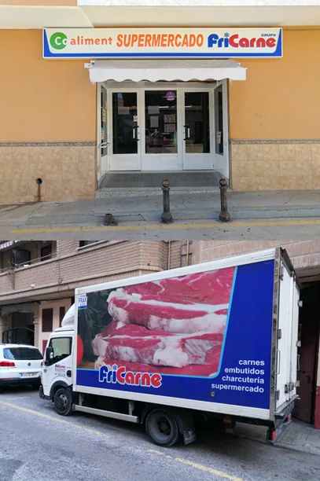

Dossier C-Level con 17 casos verificados de Alimentación y Bebidas extraídos del dossier oficial Surus. Datos literales — sin maquillaje.

Concurso, cierre de planta, sustitución de línea o desinversión. Surus opera como advisor y plataforma de subasta — Escrapalia — para desimplantar cualquier activo industrial del sector A&B.
El 80% de las desimplantaciones se gestionan como gasto. El 20% se gestionan como ciclo.
La planta cierra por inviabilidad. Hay que deshacerse de todo — maquinaria, inmuebles, stocks — en semanas, no meses. Y el administrador concursal exige transparencia, no tratos de favor.
La línea se reemplaza por una más moderna. Lo viejo funciona. Tirarla cuesta dinero y contamina. Venderla exige mercado, precio y gestión logística de retirada.
Deslocalización, fin de concesión, impacto regulatorio. La planta entera (m², equipos, residuos) se convierte en un pasivo que lastra el EBITDA. Hay que convertirlo en liquidez.
Compraste una empresa concursada. Los activos heredados no encajan con tu plan industrial. ¿Cómo monetizas lo que no vas a usar sin destruir el valor de lo que sí conservas?
El consejo exige economía circular, descarbonización, reporte no financiero. Tirar a vertedero ya no es opción. Necesitas trazabilidad de valorización industrial y segunda vida acreditable de cada lote.
Las cuatro fases adicionales son las que diferencian a Surus: lo que un bróker convencional nunca ofrece — circularidad acreditable, gestión de personas y reporte formal.

Desmantelamiento y demolición recuperable de las instalaciones de procesamiento avícola del grupo líder en producción integrada de pollo en España. SURUS operó como único contratista principal, gestionando residuos y subasta de activos: plataformas, limpiadoras, tanques, desplumadoras.

La planta cervecera de San Miguel en Málaga sustituyó la maquinaria de una línea de embotellado. Siguiendo con sus objetivos de sostenibilidad, dieron una segunda vida a sus equipos industriales antes de optar por el reciclaje. SURUS comercializó la línea completa a través de Escrapalia.

Conservas Calvo, una de las compañías líderes en alimentación a nivel global, anunció en septiembre de 2017 el cierre de su fábrica de Esteiro, en Muros (A Coruña). SURUS gestionó la subasta de depósitos, inmueble y residuos valorizables para asegurar la máxima recuperación económica de la desinversión.

SURUS lideró la desinversión y valorización de un activo técnico de precisión para la multinacional PepsiCo. La operativa se centró en la subasta online a través de Escrapalia de una controladora de peso industrial Garvens XS40 — equipo especializado en el control de peso de alta precisión para líneas de bebidas.

La Bodega Casalobos, ubicada entre Picón y Porzuna, se creó en 2003 por 23 socios y entró en concurso de acreedores en 2011. Contaba con tres plantas que formaban un edificio de 5.059 metros cuadrados: nave de crianza en botella, almacenes, línea de embotellado, nave de elaboración, laboratorio y otras instalaciones. SURUS fue designado para la venta en subasta a través de Escrapalia.


El 80% de las desimplantaciones industriales se gestionan como gasto. El 20% se gestionan como ciclo. Surus opera en el 20% — y lo entrega con caja, reporte y trazabilidad circular.